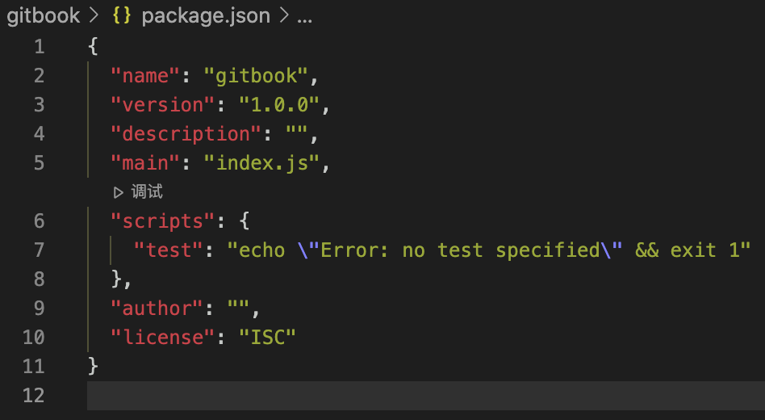
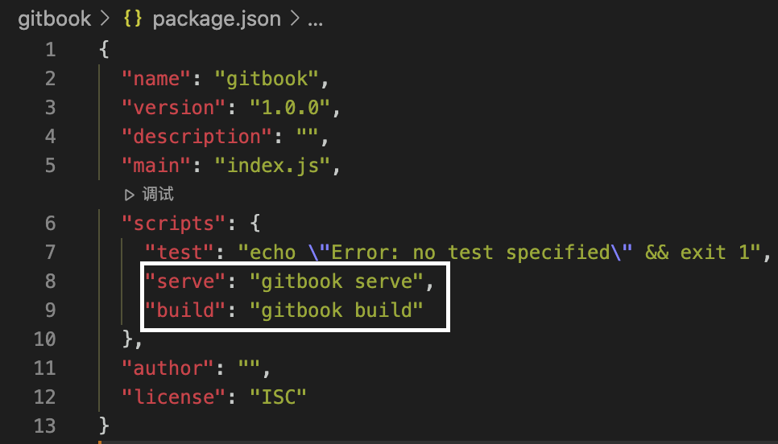

初始化Gitbook
1. 创建文件夹
mkdir gitbook
2. 进入文件夹
cd gitbook
3. 初始化Gitbook项目
gitbook init
4. 在Gitbook项目初始化的基础上，初始化npm项目
方便后期安装其他插件
npm init
然后一直回车键即可
初始化完以后，会产生package.json文件，它是node项目的配置文件。

5. Gitbook启动
第一种，直接在命令行启动
gitbook serve
第二种，将启动命令写在package.json的启动命令里面，如下图：

然后，可以执行以下命令来实现gitbook serve
npm run serve
6. _book目录
执行完serve以后，项目文件夹内会生成一个_book文件
它就是静态HTML网页的文件，以后可以直接粘贴到Github Pages里面。